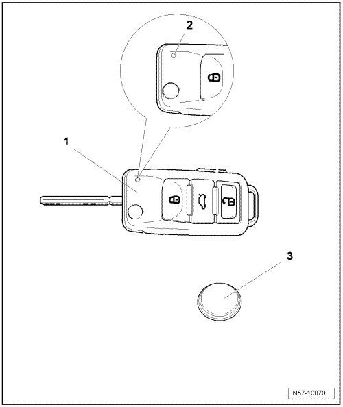

Folding Main Key With Radio-Frequency Remote Control Assembly Overview
Central Locking
Folding Main Key with Radio-Frequency Remote Control Assembly Overview

1 Key with radio frequency unit
• The radio frequency unit cannot be replaced separately
2 LED
• This LED must blink when operating the remote control
• If LED does not blink when remote control is operated, the battery is completely discharged and must be replaced:
3 Battery
• Removing and installing battery, refer to --> [ Main Folding Key with Remote Control Batteries ] Service and Repair.